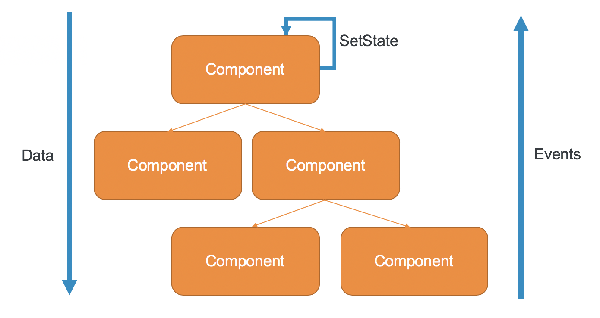

Ein Vortrag von Robert, Lenny, Lauritz
und Tim
... wie aus einem Nebenprojekt ein führendes Frontend-Framework wurde
2010: Google Mitarbeiter Miško Hevery startet ein Nebenprojekt, das später AngularJS genannt
Im selben Jahr wird es als Open Source Projekt veröffentlicht
2014-2015: JS machte Fortschritte und neue Standarts werden etabliert -> AngularJS fällt zurück
2016: Am 14.09. wird Angular2 auf der Basis von Typescript veröffentlicht
Und warum sollte mich das interessieren?
Alles schön und gut aber wie funktioniert das Ganze?

Chancen und mögliche Probleme
Chancen |
Risiken |
|---|---|
Starker kontinuirlicher Support durch Google |
Sehr starke Konkurrenz |
Bereits große Beliebtheit |
Software ist extrem schnelllebig -> neue Sprachen und Konzepte |